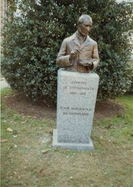
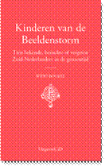
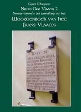
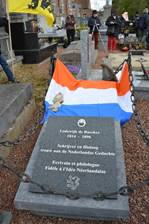
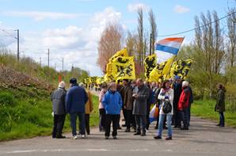
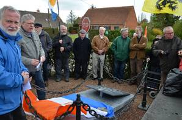
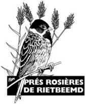
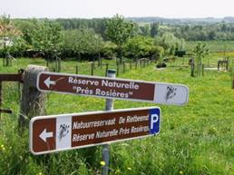
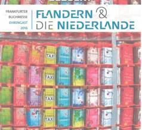

Het nieuwe jaarboek is
einde mei verschenen. Hieronder leest u alvast het ten
geleide, tevens een inhoudsoverzicht op de aan bod komende
onderwerpen.
Het nieuwe jaarboek is
einde mei verschenen. Hieronder leest u alvast het ten
geleide, tevens een inhoudsoverzicht op de aan bod komende
onderwerpen.
> nieuwsbrief
> JGe jg. - Xe trimester JAAR
Maakt u bij voorkeur gebruik van ons
Belgische zogenaamd Euro-pees rekeningnummer iban BE13 4648 2202
5139 bic:
KREDBEBB BE, waarvan de
rekeningoverzichten ons dagelijks meegedeeld worden.
Bijliggend betaalformulier enkel voor wie tot nog toe
naliet zn bijdrage te vereffenen - kan u daartoe dienstig zijn.
De
Nederlanden extra muros jaarboek 38 -
ZANNEKIN-Jaarboek 2016
Het nieuwe jaarboek is
einde mei verschenen. Hieronder leest u alvast het ten
geleide, tevens een inhoudsoverzicht op de aan bod komende
onderwerpen.
Dit 38e Jaarboek De Nederlanden extra
muros brengt eens te meer merkwaardige
bijdragen over de territoria die deel uitmaken van onze
Nederlandse kijk op de geschiedenis van onze territoria extra
muros. Als steeds opent het jaarboek met wat de
programmaverklaring van de Vereniging /Stichting Zannekin kan genoemd
orde; m.a.w. waar het ons om gaat.
Eens te meer is onze trouwe medewerker Cyriel Moeyaert
present, dit keer met een bijdrage over De Vlaming Willem van
Rubroek. We geven meteen mee dat hij een
tweede aanvulling op stapel heeft staan op zijn Woordenboek van het
Frans-Vlaams; een tweede Nieuw Oud Vlaams dus, aansluitend op zijn Nieuw Oud Vlaams 1,
dat we in 2011 (naast ons jaarboek) mochten uitgeven en dat in
2014 al een herdruk beleefde. Zijn Nieuw Oud Vlaams 2 is
ondertussen van de persen gerold en werd aan de leden als
bijlage bij het jaarboek toegestuurd.
Klaas
van Gelder en Jan
Debets besteden in Barrièretroepen in de Oostenrijkse
Nederlanden: vloek of zegen uitgebreid
aandacht aan wat daarmee - nu ruim drie eeuwen terug - allemaal
gepaard ging, en waarmee de barrièresteden in dit perspectief te
maken kregen.
Chronologisch daarop aansluitend vestigt Frank Judo de aandacht
op een merkwaardige pamflet van de Gentse jurist Jean-Louis
Serlippens die, in 1815 naar aanleiding van het aantreden van
het Koninkrijk der Nederlanden, de aandacht vestigde op de aan
Frankrijk verloren irredenta. Zijn opstel Strategische belangstelling
voor de Zuidelijke Nederlanden in de schaduw van Waterloo
vertelt ons daar meer over.
In Emile Verhaeren
(1855-1916) de Franstalige dichter met een Vlaams hart
haalt Ruud Bruijns
een figuur voor het voetlicht die een eeuw terug overleed maar,
niettegenstaande zijn Franstaligheid een Vlaming in hart en
nieren bleef en - getuige zijn oeuvre - de leuze de taal is
gans het volk glansrijk weerlegde.
Ook van de hand van Ruud Bruijns is de
trouvaille Les Marches de lEst
(1909-1914) over Vlaanderen, Wallonië en de grensgebieden
van de Nederlanden. Het geopolitieke belang
van dat hier door vrijwel niemand gekende Franse tijdschrift
werd tot nog toe nergens in de Nederlanden onderkend. Zijn
eerste exploratie is dan ook verhelderend en toont alvast aan
dat het staatsimperialisme evenzeer aan de zuidgrens als aan de
oostgrens van de Nederlanden zijn aanhangers had.
In 1965 publiceerde de (toen nog)
Vereniging Zannekin,
onder de titel Bezinning bij een
verjaardag, de rede die Jean-Marie Gantois
gehouden had op 13 september 1964, naar aanleiding van de
viering van zijn 60e verjaardag in het Grafelijk Slot van Male.
Zijn persoonlijkheid lag overigens aan de basis van de
heroprichting van de vereniging. We zijn ondertussen zowat vijf
decennia verder en al die jaren werd zijn spoor verder gevolgd
en (ook richting Duitse Nederlanden) uitgebouwd. Daarom
brengen we in piëteitsvolle herinnering het biografische essay
van Jos Vinks onder
de summiere titel Jean-Marie Gantois. Hij
was immers zowat de geestelijke stichter van Zannekin. Daarop
aansluitend volgen de Herinneringen
aan Jean-Marie Gantois van Hendrik Blanckaert,
een telg uit de Blanckaert-stam die destijds met Nicolaas
Zannekin aantrad in de Slag van Kassel in 1328.
Ook weer prominent aanwezig in deze editie
is Zeno Kolks.
Gewoontegetrouw brengt hij ook nu weer kunsthistorische gegevens
op architectonisch terrein aan de oppervlakte. Ook zijn Gebouwen
en beeldhouwwerken die in onze gebieden door
oorlogs- en ander geweld definitief ten onder zijn gegaan kadert binnen dit perspectief.
Zijn bijdrage vormt andermaal de naadloze overgang van de
zuidelijke naar de noordelijke gebieden.
Volgen van de hand van Marten Heida De
Gelderse Achterhoek en het Westmunsterland tijdens de
Eerste Wereldoorlog en Oostrand-sprokkels.
In de eerste bijdrage bespreekt hij uitgebreid de tweetalige
boekpublicatie Als Krieg
und Frieden nebeneinander wohnten Toen oorlog en vrede
elkaars buren waren terwijl hij in zijn tweede bijdrage
tal van wetenswaardigheden over de Duitse irredenta
bijeensprokkelde.
Evenzeer kaderend binnen de herdenking van
de Eerste Wereldoorlog, maar dan binnen de zuidelijke
Nederlanden, kadert de slotbijdrage van Luc Collin over De Engelen van Bergen
en Kerstmis
1914 in de loopgraven van de Westhoek waarin
hij enkele hoopvolle maar o zo
tijdsgebonden momenten evocerend in herinnering Afsluiten
doen we traditiegetrouw met een andermaal rijke oogst aan Kroniek
en boekbesprekingen, waarvoor voornamelijk
Marten Heida zich inspande.
________________
N.a.v. De Nederlanden extra muros 38
Zannekin-jaarboek 2016. 208 pp, ill.,
ISBN 9789071326363. Het jaarboek kan nog tot einde juli 2016
besteld worden tegen de ledenprijs van 29 (inclusief het
abonnement op de Zannekin
Nieuwsbrief). Daarna geldt de boekhandelprijs
(verzending inclusief) van 35 .
Rekeningen ten
name van Vereniging/Stichting Zannekin, B. 8900 Ieper:
België:
iban: BE13 4648
2202 5139 bic:
KREDBEBB - Nederland: iban:
NL68INGB0003876953 bic: INGBNL2A
Dagje Den Haag op 6 augustus 2016 in het teken van 18e en 19e-eeuwse Vlaamse kunstenaars in de Hofstad
Programma:
11.00 uur Plein Den Haag - De
belangstellenden komen op eigen houtje naar Den Haag alwaar Jan
van Tongeren hen om 11.00 uur stipt verwelkomt aan het Plein Den
Haag bij het standbeeld van Willem van Oranje.
De wandeling vanaf het
Plein zal 1 1/2 uur duren, dus tot ongeveer 12.30. Daarna op
eigen gelegenheid lunch. Op het Plein zijn tal van restaurants
en eetgelegenheden en is bij mooi weer vol met terrassen. Voor
de diehards is er ook gelegenheid om het Mauritshuis op eigen
kosten te bezoeken, waarbij Jan van Tongeren zal gidsen.
+/- 14.00 uur - beginnen we
met de tweede helft van de wandeling, eerst richting Plein
1813 met het monument voor Koning Willem I en daarna omstreeks
14.45 uur het vlakbij gelegen Panorama Mesdag. Panorama Mesdag is een
cilindervormig schilderij van ongeveer 14 meter hoog en met
een omtrek van 120 meter. Het schilderij, dat een van de
oudste 19e-eeuwse panorama's in de wereld is, is een
vergezicht op de Noordzee, de duinen, Den Haag en
Scheveningen. Het is in 1881 geschilderd door Hendrik Willem
Mesdag, een beroemde kunstschilder uit de Haagse School. Hij
was gespecialiseerd in het schilderen van zeegezichten. Zijn
vrouw Sientje Mesdag-van Houten en de kunstschilders Théophile
de Bock, George Hendrik Breitner en Bernard Blommers hebben
ook een aanzienlijke bijdrage geleverd. (Toegang 10 /pp. Vanaf 15
personen 8.50 groepsprijs).
Van daar bezoeken
we - tussen 16.00 en 17.00 uur - het Vredespaleis (toegangsprijs
8,50 ). Opgelet! Hiertoe
dient men een geldig identiteitsbewijs voor te leggen;
bovendien dient door ons gereserveerd te worden. Deze optie
dient m.a.w. meegedeeld te worden middels uw aanmelding!
Vervolgens met de
tram naar Scheveningen met het Willem I-monument, om dan om +/-
17.30 uur af te
sluiten. Het ligt voor de
hand dat menigeen dan nog iets gaat consumeren vooraleer ook
weer met de tram richting parkeergarage P+R Hoornwijck of het
Centraal Station te trekken.
Kosten?
Veel kosten zullen
er niet zijn en deze zijn naargelang de wensen aan de hand van
de hoger vermelde gegevens te berekenen. We berekenden deze
(exclusief facultatief bezoek aan het Mauritshuis) op 20,00 ,
bij aankomst ter plaatse te vereffenen. Bij wijze van
handreiking ontvangen de deelnemers een handzame brochure die de
gidssing in woord en beeld illustreert.
Hoe
reist u naar Den Haag?
Auto - Met de auto
naar de parkeergarage Den Haag: P+R Hoornwijck:
parkeren en tramdagkaart: Je parkeert je auto de hele dag bij
P+R Hoornwijck, en reist de hele dag met de tramlijnen van HTM.
Je mag reizen met maximaal 4 personen. P+R-terrein Hoornwijck
ligt aan de Laan van
Zuid Hoorn 38 Rijswijk (parkeergarage). Je komt er via de
A4 (afslag 9, Ypenburg) en de A13 (afslag 7, Den Haag-Zuid). Met
tram 15 ben je tot halte Spui vlakbij het Plein - zo ter
plaatse. Parkeren + een dagkaart voor het openbaar vervoer voor
4 personen kost aan die P+R op zaterdag van 00:00 tot- 24:00
uur: 2,00.
Openbaar vervoer -
Voor mensen die met het openbaar vervoer komen: de
internationale treinen stoppen op Den Haag Hollands Spoor. Daar
overstappen op Den Haag Centraal en dan ong. 10 minuten lopen
naar het Plein. Zie desgevallend www.9292.nl voor de
aansluitingen.
Aanmelden: Het is noodzakelijk
zich aan te melden. Dat kan schriftelijk per brief of
e-postbericht via ons secretariaat tot uiterlijk
29 juli. Indien ook geopteerd wordt voor een bezoek aan het
Mauritshuis, dient
dit op voorhand meegedeeld te worden.
Ontmoetingsdag
Zannekin - Frans-Vlaamse Cultuurdag 2016
op zaterdag 24 september in het teken van de
Geuzenopstand (1566-2016) in Belle / Bailleul
Locatie: Spijshuis La pomme d'or, 27 rue d'Ypres 59270 Belle / Bailleul.
Tel 03 28 49 11 01
Programma:
10.30 uur:
ontvangst deelnemers; Koffie/Thee
11.00 uur:
Verwelkoming door Eric Vanneufville, voorzitter van het Huis
van het Nederlands (MNL) te Belle, en door Leo Camerlynck,
voorzitter van de Stichting Zannekin
11.15 uur:
Lezingen over de 1566, jaar van de Beeldenstorm door Martin
Heida, voormalig voorzitter van de Vereniging/Stichting Zan-nekin, en door de
Frans-Vlaming Wido Bourel
12.30 uur: Vlaams
middagmaal
14.00 uur:
Rondleiding door de stad Belle met Jan van Tongeren en Leo
Camerlynck als gidsen; met aandacht voor:
o het Maison du Néerlandais /
Huis van het Nederlands
o de Kapel van
Onze-Lieve-Vrouw van Halle
o het Museum Benedict de
Puydt onder leiding van conservatrice Hedwig van Hemel
o de borstbeelden van Edmond
de Coussemaeker en Marguerite Yourcenar
o de Sint-Vedastuskerk
o het Monument van de
Gesneuvelden op de ruïnes van de oude kerk
o de Kantschool
o het Présidial des Flandres
o het toekomstige Centre
dhistoire et de culture flamandes
o het Stadhuis en Belfort
17.00 uur: Vlaams
gebak met koffie/thee en gezellige babbel
Vanaf 18.00 uur:
einde/terugkeer
Deelnameprijs:
koffie, middagmaal, drankforfait, namiddaghapje, toegangen: 55
, bij aanmelding te vereffenen op een van onze rekeningen.
Aanmelden
via ons secretariaat (e-bericht, brief, telefoon) kan tot uiterlijk 18 september
via het secretariaar: Paddevijverstraat 2, B.8900 Ieper.
.U vindt onze coördinaten onder de administratieve gegevens.

Het monument van Edmond
de Coussemaeker te Belle
Rond
de Geuzentijd lopen momenteel tentoonstellingen:
te Ieper, in de
Sint-Maartenskathedraal van 11 juni tot 11 september
te Poperinge in de
Sint-Bertinuskerk van 10 augustus tot 14 september
Un éveilleur de peuple, labbé Jean-Marie Gantois (deel 2)
Fréderic van den
Berghe
Eveiller
le peuple
Gantois a
tellement use et abuse de pseudonymes qu`il est vain d'en
vouloir faire la liste. Mais son style et ses tournures sont
assez faciles à déceler: «ça, c'est du Gantois!», on se trompe
rarement. Ce péché mignon a l'avantage de démontrer que Gantois
ne recherchait nullement la gloriole de la publicité de ses
uvres. L'important pour lui était d'éveiller le lecteur.
Certains de ses farouches contempteurs ont voulu confondre
opiniâtreté dans le combat avec prétention à la reconnaissance
publique. Tout le monde ne passe pas son temps à sculpter sa
propre statue.
Depuis 1941, le
mouvement touche un public beaucoup plus large grâce à un
journal hebdomadaire, La
Vie du Nord, qui officiellement n'a aucun lien avec le
Vlaams Verbond. Sous couvert d'une infinité de pseudonymes,
Gantois y publie autant d'articles sur les sujets les plus
variés, essentiellement l'histoire et la culture.
Il est cocasse de
constater que si, au début, l'illustration pleine première page
présentait tel ou tel beffroi, tel ou tel clocher, un moulin ou
la récolte des chicons, des paysans au visage buriné et leurs
solides épouses à fichu dans l`air du temps («la terre ne ment
pas!»), ces thèmes firent place, à la longue, à d'accortes stars
du cinéma ou du théâtre, qui avaient de proches ou lointaines
attaches avec nos contrées... Le marketing n'avait pas encore
été inventé, mais la méthode existait déjà. L'important était la
marque de savon que l'on vendait, et le savon était flamand.
Régionaliste,
flamingant au sans culturel du terme, on n'a jamais pris Gantois
dans la collaboration politique ou toute une frange de
l'intelligentsia française s`était fourvoyée. Une fois la guerre
terminée, lorsque le VVF et ses dirigeants comparaîtront devant
le Tribunal de Lille, dès le 9 décembre 1946, Gantois qui
n`avait pas fini cette guerre dans les fourgons allemands en
retraite se proclamait «ni coupable, ni repentant».
La République
restaurée après l'intermède Pétain (Ah, lui aussi était de chez
nous, pas de chancel), la République, donc, avait des comptes à
régler. Un peu trop zélé, certains de ses serviteurs iront par
exemple en Bretagne jusqu'à rechercher des «traitres»
(nationalistes Bretons) qui avaient déjà été fusillés par les...
nazis! En Flandre, c'était l'occasion rêvée de faire taire tout
mouvement enraciné, identitaire dirait-on aujourd`hui. C'était
la «divine surprise» des revanchards. «T'as du talent, je n'en
ai pas, il faut que ça change!» disait Arletty en parlant de
cette période de règlements de comptes.
Le
procès
Le procès fut
l'occasion, pour Gantois, de s'amuser aux dépens de ses
détracteurs. Ses péroraisons savantes et ses remarques
faussement naïves firent les délices du public ou suscitèrent
son hilarité. C'est ce qu'en rapporte la presse de l`époque:
Le Président:
Comment osez-vous dire que Jeanne d'Arc n'était pas française?
L'accuse: Mais
bien entendu, Monsieur le Président, ses voix ne lui
disaient-elles pas «Jeanne, va en France ou c'est grande pitié».
Si elle devait aller en France, c'est que Domrémy n'y était pas!
Cruel, n'est-il
pas? Et tant d'autres saillies du même tonneau. Dans son
réquisitoire, le Commissaire du Gouvernement ne demande rien
moins que la peine de mort. Le verdict sera sans commune mesure
avec les attentes du Ministère Public et de la cohorte des
adversaires et ennemis.
Une pièce
remarquable cependant aurait dû anéantir Gantois devant ses
juges. On sortit d'une malle de documents abandonnée au Touquet
une lettre bientôt connue sous le nom de «Lettre à Hitler». Il
s'agissait d'une cinquantaine de feuilles dactylographiées,
accompagnées d'une lettre sans signature autographe ou Gantois,
disait-on, faisait allégeance au Reich millénaire et à son
Führer.
Accusation bien
plus grave que celles de certains témoins qui avaient entendu
dire (par leur concierge?) que Gantois était destiné à devenir
évêque d'Ypres, à moins que ce soit GauIeiter de Flandre «ou
quelque chose de ce genre». Des «élucubrations qui doivent
laisser sceptiques les jurés» note le journal Nord-Soir.
Cette fameuse
lettre n`eut pas l'effet létal escompté. De toute évidence, le
mémoire est une compilation de diverses thèses et articles de
Gantois; on y reconnait bien son style et ses arguments,
largement développés par ailleurs. La lettre proprement dite est
d'une telle servilité et obséquiosité qu'elle ne peut être de
Gantois. Les connaisseurs y ont vu la patte d'un professeur
allemand, Franz Petri, spécialiste ès germanite, bien introduit
en haut-lieu, et habitue des formules de politesse de ces
milieux.
Eric Defoort
(Université de Courtrai - kulak),
qui dirigea après la mort de l`Abbe le legs de sa riche
bibliothèque, interroge à ce sujet lors d'un colloque, admit
qu'il était bien difficile de faire la part entre ce qui revint
à Petri et ce qui est de Gantois. Le débat est clos: on n'a
jamais pu prouver lauthenticité de la lettre. Si cela avait été
le cas, l`Abbe n'aurait pas échappé au peloton d'exécution. La
justice populaire fut en fin de compte bien plus clémente.
Gantois écopa de cinq ans de prison et en effectuera à peine
plus de trois. Finalement, un épilogue judiciaire en rapport
avec la minceur du dossier d`accusation.
L'après-guerre
Gantois sortit de
prison le 8 octobre 1948, mais restait interdit de séjour dans
17 départements. Bien entendu les 4 du Nord de la France sur
lesquels s`étendait l'action du VVF, mais aussi, - et là, quel
aveu pour la République! - toute la frange périphérique de
l'Hexagone: les 5 (oui: 5!) départements bretons, 3
d'Alsace-Lorraine, 2 de Savoie, les Alpes maritimes, les
Pyrénées Atlantiques et Orientales. Total 17.
Seule la Corse
avait été oubliée parmi les régions où l'abbé cultivait ses
relations...
L'Abbé connut
alors un exil temporaire dans une contrée qui ne devait vraiment
pas lui déplaire: la Bourgogne. Puis ensuite à Brachay, en
Haute-Marne. Il mit à profit ses loisirs forcés pour écrire et
correspondre avec ses très nombreux amis. Dès 1950, il peut
revenir en vacances dans son village de Watten. La rapidité de
ce retour à une situation normale est tout de même à porter au
crédit de la France: dès 1951, des lois d'amnistie sont votées
pour les personnes frappées d`«indignité nationale», un concept
juridique inventé lors de la Libération/épuration (qui sera
aboli par une loi de 1953 qui mettra fin à l'inéligibilité et
rétablira les droits à la retraite). Seuls resteront
imprescriptibles les «crimes contre l'Humanité».
Un pays européen
n`a pas encore entrepris cette démarche plus de 70 ans après ces
évènements: la Belgique où, au nom de la vertu, on s'obstine à
refuser l'amnistie ou la réhabilitation des réprouvés. Alors
qu'en France c'est en 1964 qu'on libère le dernier condamné pour
collaboration, on se demande pourquoi la Belgique, toujours si
prompte en toute chose à suivre la mode de Paris, refuse cette
fois de suivre l`exemple de la France...
La troisième
partie de la vie de Gantois, si elle fut plus discrète, n'en
sera pas moins active, et même prolifique. L`Abbé ayant renoué
avec ses nombreux amis et s'en étant fait de nouveaux grâce
au... procès, se relance dans la publication de nombreux
articles dans diverses revues françaises, belges ou
néerlandaises. C`est l'époque où il collabore à la revue
normande Viking. En
Flandre même, il prend contact avec un jeune médecin, engagé
volontaire en 1944 (donc clean, comme on dirait aujourd'hui),
Jan Klaas, de Saint-Omer, qui deviendra son bras droit dans
l'aventure de la résurrection d'un périodique flamand en France:
Notre Flandre. Car là
encore, c'est bien entendu luvre de l`Abbé; la revue ne
survivra pas à sa mort, et le dernier n°, en 1969, est un
hommage. Le docteur Klaas, créera alors La Nouvelle Flandre,
d'orientation plus générale (culture, langue, mais aussi
économie, évènements sociaux, aménagement) mais qui ne dépassera
pas le n° 5.
Une
notoriété internationale
Au fil des ans, le
caractère de Gantois accepte de moins en moins ce qu'il
considère peut-être à tort comme des compromissions, et il se
brouillera avec de gens de bonne volonté qui, de leur, côté,
fournissent un travail non négligeable, notamment dans
l`enseignement de la langue néerlandaise. Citons ici le Comité
pour la Flandre française, et son animateur infatigable, Luc
Verbeke, de Waregem, en Flandre Occidentale belge.
S'il se coupe de
certains, l'Abbé conserve de solides amitiés avec d'autres,
notamment avec H.P. Schaap, avocat juif néerlandais, officier
dans l'armée (néerlandaise) des Indes. Très tôt, dès les années
vingt, Schaap est membre fondateur de l'association estudiantine
nationaliste Diets Studentenverbond, et il refondra en 1964
l'association Zannekin (la précédente avait succombé en 1944)
dont le but est de financer et aider par tous les moyens l'idée
flamande en Flandre française, notamment la revue Notre Flandre.
C'est cette
association qui forcera Gantois à accepter un hommage qu'il
méritait bien pour son 60 anniversaire (1964), au château des
comtes de Flandre, à Male, près de Bruges. Les messages qu'i|
reçut à cette occasion lui parvinrent du monde entier, il n'est
que de relire le n° spécial de Notre Flandre édité à cette occasion. En 1962
déjà, l'année de son retour à Lille à la paroisse St-Michel, il
avait déjà reçu la consécration de son apostolat flamand lors de
son élection à l'Académie Néerlandaise de Leyde, au fauteuil
occupé auparavant par deux autres Flamands de France, Camille
Looten et René Despicht.
Fin mai 1968, au
lendemain de l'enterrement de sa mère, Gantois décède dans des
circonstances pénibles. Il ne faut pas cependant évoquer quelque
complot trouble comme certains l'ont fait d'un air entendu.
Probablement pris d`un malaise lors d'une promenade le long du
canal de la Colme, à Watten, il glissa sur la berge et se
retrouva à mi-corps dans l`eau, sans qu'on en ait trouvé dans
ses poumons. Donc, pas de noyade.
Dieu lui avait
accordé de mourir là où il était né, n'était-ce pas une grâce?
Dieu est d'ailleurs facétieux, Lui qui avait fait naitre Gantois
un 21 juillet, ce qui ennuyait beaucoup celui-ci, rappela l'âme
de son prêtre wallon et ennemi intime de Gantois, l'abbé Jules
Mahieu, grand napoléonomane, le 11 juillet 1968. Espérons que le
paradis est assez vaste pour qu'ils ne se rencontrent jamais.
Il faudrait des
thèses universitaires pour rendre compte de l`action de |'abbé
Gantois, et évaluer son influence, et son héritage. S'il est
impossible de transposer toutes ses idées à l'époque actuelle,
c`est que le monde change et évolue, que bientôt un demi-siècle
nous séparera de sa mort. Si les soixante-huitards font déjà
figure d'anciens combattants, que dire d'un homme dont
l'essentiel de l'action se situe dans l'entre-deux-guerres?
Que reste-t-il de
lAbbé? Et bien ses écrits. Un proverbe flamand dit «Wie
schrijft die blijft». (Celui qui écrit reste présent). Chacun
peut faire son miel, critiquer, apprécier, apprendre, découvrir,
voire même rejeter, mais juger sur pièces. C'est sur ce principe
que repose |'honnêteté intellectuelle. On voudra bien, dans cet
océan d'écrits, méditer sur ce que l'Abbé disait de l'Europe.
Munis de ce viatique, partons à la découverte de notre passé,
imaginons notre avenir, la tâche est grande. Il y a encore des
beffrois à construire.
_______________
Bron: Magazine
des Amis de Jean Mabire, nr 45, Solstice dEté 2015,
pp. 14-17. Publicatie van de lAssociation des Amis de Jean
Mabire, 15, route de Breuilles, F. 17330 Bernay Saint Martin.
Prijs: 5 . Zie ook: www.jean-mabire.com
In het betreffende rijk geïllustreerde
nummer van 40 paginas wordt verder ook uitgebreid aandacht
besteed aan:
Opmerking:
Jean Mabire (1927-2006) was een Normandische auteur en
regionalist met aandacht voor de Franse Nederlanden.
Kinderen van de Beeldenstorm
Met deze studie is
Wido Bourel (°Kaaster in Frans-Vlaanderen 1955) aan zijn
tot nog toe omvangrijkste publicatie toe. Zijn onderwerp kadert
in de herdenking van het uitbreken van de Beeldenstorm te
Steenvoorde, op 10 au-gustus 1566, dus dit jaar 450 jaar
geleden.
In zijn inleidend
hoofdstuk schets hij summier de oorzaken ervan en de wervelstorm
die daarop doorheen de Nederlanden raasde. Uit dit tijdsgewricht
selecteerde hij een tiental kinderen zowel bekende als
beruchte, maar ook soms uit het collectieve geheugen ver-dwenen
Zuid-Nederlanders. Even opsommen: Charles de lEcluse,
plantkundige uit Atrecht; Pieter lOyseleur de Villers uit
Rijsel, rechterarm van Willem van Oranje en auteur van diens Apologie; Pieter
Datheen, de psalmberijmer uit Kassel, wiens graf we tevergeefs
zochten in Elbing (thans Polen); Adriaan de Berghes uit Olhain
en Guislain de Fiennes uit Lumbres, admiralen van de
Watergeuzen; Antonius Temmerman Fabri uit Duinkerke, de dubieuze
dominicaan betrokken bij een aanslag op Willem van Oranje;
Pieter Platevoet uit Dranouter, predikant en cartograaf in
dienst van de Verenigde Oost-Indische Compagnie; Gautier Herlin,
watergeus uit Valencijn; Cathelyntje Trigault uit Prisches, de
moeder van alle Europese Amerikanen; Maria de la Queillerie uit
het Leiedal, echtgenote van Jan van Riebeeck en eerste Europese
vrouw op Kaap de Goede Hoop.
Over deze tien, de
ene al meer bekend dan de andere, wist de auteur hun
levensverhaal te achterhalen en de meest markante
scharnier-punten ervan in het licht van hun tijd te boekstaven.
Een niet geringe prestatie die getuigt van een erudiete
zoektocht doorheen zijn bronnen.
In zijn afsluitend
nawoord besteedt de auteur ook nog aandacht aan begrippen als
volkssoevereiniteit (Althusius), historische
lotsver-bondenheid (die Henegouwers, Artesiërs en Picardiërs
terecht tot Nederlanders stempelt) en religie en fanatisme
(meer dan ooit aan de orde in deze tijd). Sterk aanbevolen!
____________________
N.a.v.
Wido
Bourel, Kinderen van de
Beeldenstorm. Tien bekende, beruchte of vergeten
Zuid-Nederlanders in de geuzentijd,
gen., 123 pp., ISBN 978-94-9143-606-2, NUR 630, prijs: 20,00 +
3,50 verzendkosten. Bestellen via overboeking van het bedrag
op rekening IBAN: BE38 8440 4509 0172 BIC: RABOBE22 t.n.v.
Wido Bourel, Merellaan 7, 2288 Bouwel.

De uitgave van een
tweede bundel Nieuw Oud Vlaams (2),
van de hand van Cyriel Moeyaert met nieuwe aanvullingen op
zijn Woordenboek van het
Frans Vlaams, kon ondertussen gerealiseerd worden. Onze
leden vonden het als bijlage bij het Jaarboek De Nederlanden
extra muros 2016. Ook dit tweede deel telt 96 paginas
en is ruim geïllustreerd met o.a. fotos van zegslieden ons
bezorgd door Mark Ingelaere. Extra-exemplaren van deze uitgave
kunnen besteld worden door overboeking van 10 (leden) of 12
(niet-leden) op onze bankrekening (zie p.2), met de vermelding:
Nieuw Oud Vlaams 2. Van de 2e druk van Nieuw Oud Vlaams 1
resten nog aan handvol exemplaren verkrijgbaar aan dezelfde
prijs. Bij bestelling daarom steeds specifiëren welk deel 1 of
2 gewenst wordt.
Restauratie graf Lodewijk de Baecker
Naar aanleiding van de
40e Zwijgende voettocht aan
de Penebeek op 18 april 2016 werd op het
kerkhof van Noordpene het gerestaureerd graf van Lodewijk de
Baecker ingehuldigd.
Opmerkelijk is de
niet mis te verstane tekst op de gedenksteen: Trouw aan de
Neder-landse Gedachte, waarmee de kern van De Baeckers streven
terecht beklemtoond wordt.
Initiatiefnemer
van de restauratie was Wido Bourel die daarvoor zowel de
Marnixring als onze Vereniging/Stichting Zannekin wist te
winnen. Hij lichtte bondig de verdiensten toe van Lodewijk de
Baecker. Tot slot vergastte Claude Devulder, voorzitter van het
Comité van de Pene, de aanwezigen op doedelzakmuziek. Die viel
na afloop van de voettocht ook te beluiteren bij het afsluitend
vriendentreffen met samenzang en volksdans.
Wido Bourel is ook de
auteur van de publicatie De
saga van Lodewijk. Over Lodewijk de Baecker, voorvechter van
de Nederlandse Gedachte, dat in 2014 verscheen en waarin
aandacht besteedt werd in onze Nieuwsbrief 2/2015, p.
16.
Na de plechtigheid aan het
gerestaureerde graf van Lodewijk de Bae-cker werd de 40e
voettocht-tocht doorheen het Slagveld van de Penebeek (1677)
aangevat.
(Fotos Edgard Stubbe)
Hulde aan het graf van Lodewijk de Baecker
Wido
Bourel
Officieel
was hij, volgens een Franse biografie verschenen in 1860, en ik
citeer: magistraat, germanist, archeoloog, officier van de
academie, inspecteur van het beschermd historisch patrimonium
van het Noorder-departement, correspondent van het ministerie
van binnenlandse zaken en van onderwijs, lid van verschillende
geleerde genootschappen in Frankrijk en elders. Voor ons
Vlamingen blijft hij vooral de onvolprezen auteur van meer dan
vijftig boeken. Boeken over Vlaanderen, over de heidense tijden,
en ook over de grote Germaanse epossen als de Niebe-lungen, Gudrun en
het Roelandslied.
Een
boek als mijlpaal
Een
mijlpaal in de Vlaamse heropleving is zijn boek Les Flamands de France.
Deze publicatie leidde tot de oprichting in 1853 van het Comité Flamand de France,
toen nog een echt Vlaams Comité waarvan Lodewijk medeoprichter
en ondervoorzitter werd. Maar De Baecker was een Vla-ming uit
één stuk en verliet snel het CFF omwille van gebrek aan
radi-calisme. Lodewijk de Baecker ijverde zijn leven lang - dan
maar op zijn eentje - ten gunste van het onderwijs van de
Nederlandse taal en cul-tuur. Alleen was hij actiever dan alle
Vlaamse verenigingen samen.
Actualiteit
van Lodewijk
De
gedachten van Lodewijk de Baecker blijven zeer actueel. Hij
besefte beter dan wie ook dat de Nederlanden in Frankrijk geen Hauts de Fran-ce waren
maar, historisch en cultureel, het zuiden van de Nederlanden.
Beter geïnspireerd dan de huidige Franse machthebbers noemde hij
de regio Néerlande. Actueel
ook: in het voetspoor van de Vlaamse en Nederlandse voormannen
uit zijn tijd was hij de eerste in Frankrijk die het begrip Nederlands
introduceerde om onze taal en haar dialecten aan te duiden. De
huidige verdedigers van het Vlaams als een aparte taal, vreemd
aan het Nederlands, kunnen van Lodewijk nog iets leren.
Lodewijk de
Baecker onderhield nauwe en vriendschappelijke contacten met
grote namen als Ferdinand Augustijn Snellaert, Josephus
Alber-dingk Thijm, Jacob Grimm en Heinrich Hoffmann von
Fallersleben.
Dankwoord
Tot besluit wil ik
nog alle privé personen danken - alsook twee ver-enigingen - de
stichting Zannekin
en de Marnixring - die meehielpen om de nodige fondsen voor deze
operatie te verzamelen. Een bijzondere woord van dank ook aan
Mark Ingelaere voor de logistieke assistentie.
Lodewijk de
Baecker, Vlaanderen en de Nederlanden groeten u als voorvechter,
schrijver en filoloog, trouw
aan de Nederlandse gedachte.
Marten Heida
Een
cisterciënzer klooster-familie
De grote
inspirator van deze monnikenorde was Bernardus van Clair-vaux
(1090-1153). Het is met name aan hem te danken dat deze orde
zon grote vlucht nam in West-Europa. Vanuit Clairvaux waaiert
deze klooster-formule onder andere uit in noordelijke richting
en bereikt ook zo de lage landen. Drie van deze kloosters wil ik
aan u voorstellen en wel vanwege de familiale verhouding die
ze tot elkaar hebben.
De
moeder
In 1165 het was
vorig jaar 850 jaar geleden streken cisterciënzer monniken
neer in de omgeving van het huidige Rinsumageest, een dorp een
tiental kilometers ten zuidwesten van Dokkum gelegen. Het door
hen gebouwde klooster dat met een verwijzing naar het
oorspron-kelijke klooster van deze orde Klaarkamp werd genoemd
was de eer-ste vestiging in onze landen. Deze plaats voldeed aan
de voorwaarden die daaraan gesteld werden. Eén van de
belangrijkste was dat in de directe omgeving stromend water
aanwezig was. In de Klaarkampse optie voldeed daaraan het
riviertje dat vandaag als Dokkumer Ee op de kaart staat
aangegeven.
De monniken gingen
gekleed in een habijt van goedkope ongekleurde wol. In Friesland
werden ze in de volksmond schiere monniken ge-noemd. Tot op de
dag van vandaag is deze naam te beluisteren in het eiland dat
dienst deed als hun uithof: Schiermonnikoog. Naast de dienst van
de gebeden hielden de monniken zich o.a. bezig met
ontginnings-werkzaamheden. De eerste gebouwen werden opgetrokken
uit turfsteen die aangevoerd werd uit de Eifel. Later werd
overgeschakeld op bak-steen, gebakken van klei uit de directe
omgeving; bovendien had men de beschikking over turf waarmee de
ovens gestookt konden worden.
Het klooster
Klaarkamp moet een indrukwekkend bouwwerk geweest zijn. Maar
daarvan is niets bewaard gebleven. Als in 1580 Friesland om
gaat, dat wil zeggen de zijde van de Hervorming kiest, wordt het
kloos-ter opgeheven en gaat het dienst doen als steengroeve.
Het enige wat aan dit stuk verleden herinnert is een licht
verhoogd stuk land waar ooit dit complex heeft gestaan.
De
dochter
Zeven kilometer
ten westen van de stad Groningen ligt het dorp Adu-ard. Hier
werd in 1192 vanuit Klaarkamp de St.-Bernardusabdij gesticht,
die zou uitgroeien tot een wetenschappelijk centrum. Met name de
Aduarder Kring heeft van zich doen spreken. De namen van
Wessel Gansfort en Rudolfus Agricola waren er nauw mee
verbonden. De Beel-denstorm van 1566 mag dan aan deze abdij
voorbij gegaan zijn, dat was niet het geval met het
oorlogsgeweld. Daar kreeg het in 1568 mee te maken als nasleep
van de gevechten bij Heiligerlee.
In 1594 wordt de
stad Groningen door Prins Maurits veroverd als ge-volg waarvan
het klooster werd opgeheven. In tegenstelling tot Klaar-kamp is
in Aduard niet alles uitgewist. De ziekenzaal bleef behouden en
doet tot op de dag van vandaag dienst als kerkgebouw van de
plaatse-lijke Protestantse gemeente.
De
kleindochter
Hiervoor moeten we
de grens over en wel naar Oost-Friesland. Daar werd in 1230
vanuit Aduard te Ihlow een dorp te zuidwesten van Au-rich
het klooster Schola Dei gesticht. Maar ook het
grootmoeder-klooster Klaarkamp had de nodige bemoeienissen met
dit kleinkind. De gebouwen werden opgetrokken op een verhoging
in het landschap die omgeven was door moerassen. Dit bood aan de
ene kant veiligheid, aan de andere kant nodigde deze ligging uit
zich intensief bezig te gaan houden met ontginningswerk.
In 1529 gaven de
graven Enno en Johan opdracht om de gebouwen af te breken. De
stenen werden naar Aurich overgebracht en deels gebruikt voor
hun eigen versterkingen en deels voor de bouw van de
Lamberti-kerk. Ook het Antwerps retabel kreeg in deze kerk een
plaats en bleef daardoor bewaard.
Vanaf 2005 hebben
op het terrein van het voormalige klooster regel-matig
opgravingen plaats gevonden. Ze gebeurden in het kader van het
Ihlow-project. De eerste aanzet daartoe dateert van 1970;
daaraan is de naam van Harm Wiemann nauw verbonden. In 2009 kon
het afgerond worden met de voltooiing van de staalconstructie
die een voorstelling geeft van de voormalige kloosterkerk.
Marten Heida
Prins Willem Alexanderpark 53
NL-3905 CB Veenendaal
Voor belangstellenden geef ik nog een
aantal uitgaven door: Philip Holt, Schiere monniken en
grijze vrouwen. Cisterciënzers in Nederland 1165-1797, Een
overzicht, Uitg. Damon, Budel. 2015. 344 blz. 39,90.
ISBN 978.94.6036.189.0.
Erwin Boers, Klaarkamp. Middeleeuws klooster bij
Rinsumageest. Schiere monniken in noordelijk Fryslân,
Uitg. Unipers, Hoorn. 2014. 96 blz. 15,95. ISBN 978.90. 8741.029.2.
Berhard Buttjer (tekst) en
Martin Stroman (fotos), Wo einst die Mönche
lebten. Die Klosterstätte Ihlow, ein Forst und zwölf Dörfer,
Uitg. Verlag Soltau-Kurier, Norden. 2009. 156 blz. 19,50. ISBN
978-3-939870-22-7.
Een uniek
Vlaams-Waals Natuurproject De Rietbeemd - Les Prés
Rosières
In Overboelare en Moerbeke,
deelgemeenten van de Oost-Vlaamse stad Geraardsbergen, en in
Twee-Akren, deelgemeente van de Henegouwse stad Lessen, ligt
het natuurreservaat De Rietbeemd Le Prés Rosières.
Het hele gebied is in eigendom van de
Waalse natuurbe-schermingsverenigingen Vogelbescherming
(LRBPO) en de Vlaamse vereniging Natuurpunt. Thans is het nog
het enige taalgrens-overschrijdend natuurreservaat in België.
De joviale Conservator van dit prachtig
stukje meersenlandschap is Godfried Merlevede,
zoon van Daniël Merlevede, die een tijd lang voorzitter was
van het Komitee voor Frans-Vlaanderen (KFV). Godfried was
lange tijd leraar Grieks en Latijn aan het College van
Ge-raardsbergen.
De Rietbeemd ligt in de nog open,
bebouwingsvrije vallei van de binnenkort opnieuw meanderende
Marke, een visrijke bijrivier van de Dender. Nagenoeg de hele
vallei is door het Vlaamse en het Waalse Gewest ingetekend als
Habitatrichtlijngebied (Natura 2000). Op de heuvelflanken met prachtige vergezichten treft de
bezoeker her en der gemengde loofbossen aan, met nog sporen
van wastines of halfopen natuurlijke overgangszones tussen
de verschillende bospercelen. Een tiental hectaren bos zijn
zelfs eigendom van het reservaat.
De Rietbeemd is bijna 80 ha groot en werd gesticht in
1987, toen er nog geen sprake was van enige natuurbescher-ming
in deze streek!
Aan de rand van het natuurgebied werd
een bezoekerscentrum ingericht in de schuur van de historische
St. An-toonshoeve, die met eigen middelen werd verbouwd. Men
kan in dit authentieke kader o.m. terecht voor een mooie
diamontage van het reservaat in de vier seizoenen of een
prachtig schaalmodel.
Zelfs vanop de openbare weg kun je in
dit ware stilte- en duisternisgebied nog geluiden der stilte
beluisteren zoals de zang van vogels of s nachts genietend
van de kreten van 4 verschillende soorten uilen, de
sterrenhemel bewonderen in de ingetogen vallei, zonder al te
veel lichtvervuiling, verklaart met enige trots conservator
Godfried.
Overdag kan de wandelaar er, tussen een
twintigtal verschillende soorten dagvlinders, ook de kudde
Galloway- en Limousinkoeien bewonderen te midden van een
gevarieerd landschap met knotwil-genrijen, hagen, houtwallen,
rietvelden, prachtige geurige moeras-spirearuigten,
moerasgebieden, ouderwets meanderende beekjes en
amfibieënpoelen. De grazers worden ingezet voor de extensieve
be-grazing van bepaalde percelen, wat duidelijk de
biodiversiteit ten goede komt.
Dit is het te respecteren leefgebied van
een hele schare vogels: nach-tegaal, wielewaal, buizerd,
sperwer, wespendief, torenvalk, boomvalk, alle mogelijke
soorten grasmussen, sprinkhaanzanger, rietgors (het logo van het
reservaat), Orpheusspotvogel, steenuil, kerkuil,
ransuil, bosuil,
om maar de belangrijkste te noemen.
Misschien heb je zelfs een onverwachte ontmoeting met
één van onze laatste en ook mooiste nog overlevende wilde
zoogdieren: de vos. Een hele belevenis! Ook een hermelijn, een
wezel of een bunzing kan je pad kruisen, zonder de amfibieën
te vergeten of de gouden tor, de hoornaar, de horzelvlinder en
de weidebeekjuffer, vervolgt conservator Godfried.
Sinds kort beschikt het reservaat ook
over twee bewegwijzerde, vrij toegankelijke wandelpaden, met
hier en daar een rustbank. Geleide wandelingen kunnen op
aanvraag steeds georganiseerd worden. Alle info bij Godfried Merlevede
Chapelle Saint-Pierre 14 B 7864 Twee-Akren/Lessen E-post:
derietbeemd@hotmail.com
Frankfurter
Buchmesse
De jaarlijkse
Frankforter boekenbeurs of Frankfurter Buchmesse, die in de
maand oktober in Frankfurt plaatsvindt, is de grootste en
belangrijkste ter wereld. Niet minder dan zevenduizend
standhouders uit meer dan honderd verschillende landen hebben er
een plek en ruim 9.000 journalisten en onge-veer 275.000
boekenliefheb-bers bezoeken ieder jaar deze beurs. Dit jaar
vindt deze Buchmesse plaats van woensdag 19 oktober tot en met
zondag 23 oktober 2016. Traditiegetrouw is er op deze Buchmesse
een gastland (Ehrengast). Het is de bedoeling om dan de
literatuur maar ook en vooral de cultuur in ruime zin van dit
gastland extra in de kijker te zetten.
Na Nieuw-Zeeland
(2012), Brazilië (2013), Finland (2014) en Indonesië (2015) zijn
het dit jaar Vlaanderen en Nederland die zich gezamenlijk als
Ehrengast mogen voorstellen op 68e Frankfurter Buchmesse.
«De Zavelberg» Edouard Michielsstraat 51
B 1180
UKKEL / Brussel
T. 00 32 485 630 227
- F. 00 32 2 376 75 96